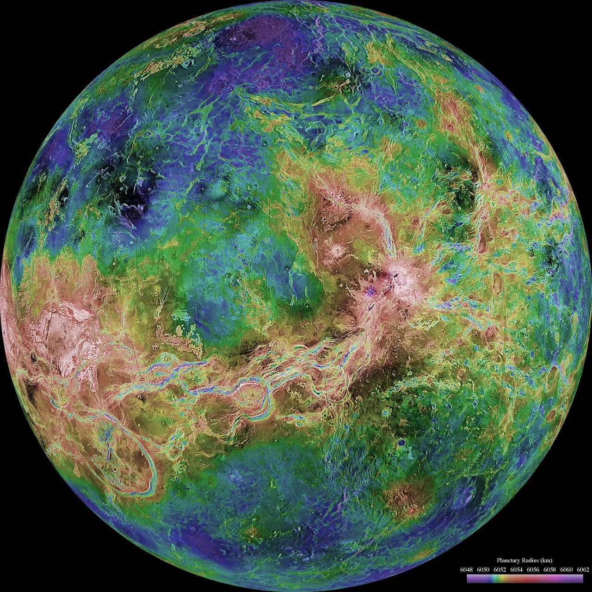

Jaučio zodiako ženklo simbolis – jo galva. Pavasaris jau galutinai įsiviešpatavo, sultingose žydinčiose pievose ganosi galvijų bandos. Didelis ir masyvus, įsitikinęs savo jėga, Jautis ramiai saugo jam priklausančią teritoriją. Te niekas neišdrįsta įsibrauti į jo valdas, kitaip turės reikalo su grėsminga jėga.
Valdančioji planeta: Venera
